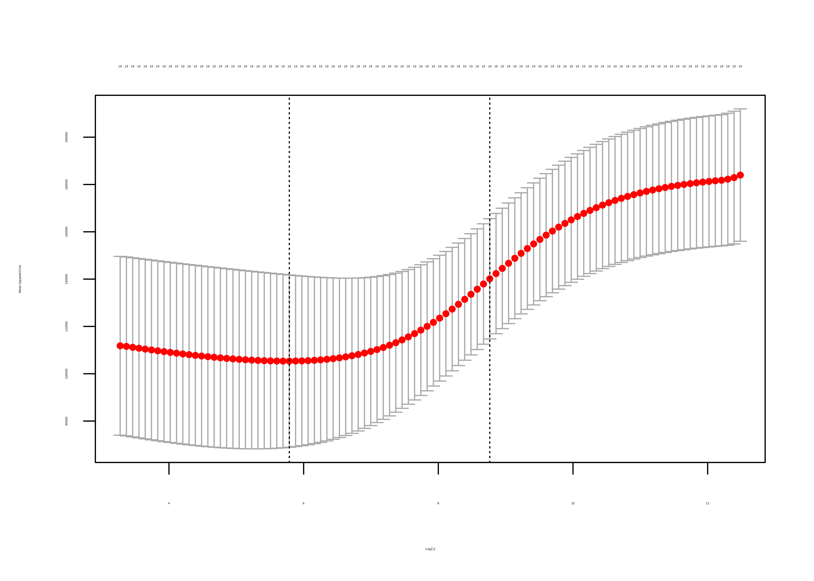
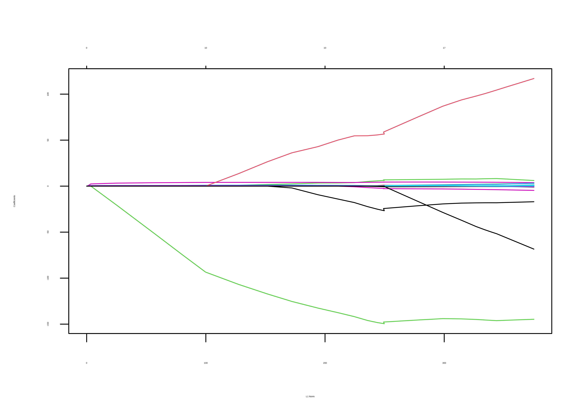
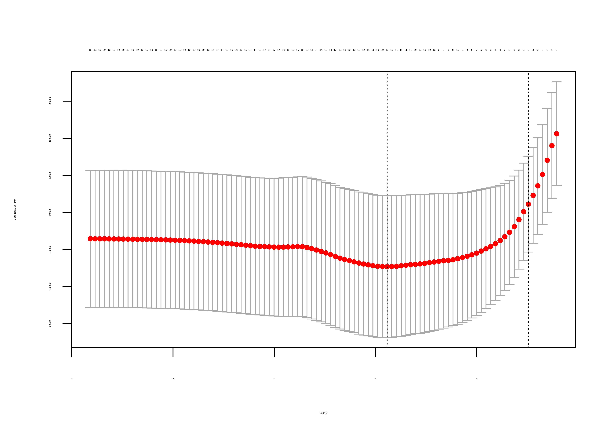

Capítulo 18 Modelos sparse y métodos penalizados de regresión
María Durbán
18.1 Introducción
El modelo de regresión lineal múltiple: \(y=\beta_0+\beta_1 X_1+\ldots + \beta_pX_p+\varepsilon,\) visto en el Capítulo 16, a pesar de su simplicidad, tiene importantes ventajas como la interpretabilidad y su buen poder predictivo en muchas situaciones.
En este Capítulo se va a ver cómo se puede hacer el modelo más interpretable y mejor predictor, y para conseguirlo se reemplazará el método de mínimos cuadrados (utilizado hasta ahora para la estimación de los parámetros) por un método alternativo.
Por lo tanto el objetivo de este Capítulo aprender técnicas para mejorar:
- Precisión de la predicción: en particular cuando el número de variables es mayor que el número de observaciones: \(p>n\) (algo que ocurre con mucha frecuencia hoy en día). En este caso no se pueden utilizar mínimos cuadrados ya que la matriz de diseño no es de rango completo, y por lo tanto, no se puede encontrar una solución al problema de minimización. Por lo tanto, se necesita reducir el número de variables, que además, evitará que se sobreajusten los datos.
- Interpretabilidad del modelo: Al eliminar las variables irrelevantes (es decir, haciendo cero los correspondientes coeficientes) se obtendrá un modelo que es más fácil de interpretar. Por lo tanto, se presentarán varios métodos para llevar a cabo de forma automática la selección de variables.
Los métodos para reducir el número de variables en el modelo serían:
- Selección del mejor subconjunto: Su objetivo es identificar un subconjunto de entre los \(p\) predictores que se considera que son los que están relacionados con la variable respuesta.
- Shrinkage: En este caso no se quieren seleccionar variables explícitamente, sino que se añade una penalización que penaliza el número de coeficientes o su tamaño.
- Reducción de la dimensión: El objetivo es proyectar los \(p\)-predictores en un subespacio de dimensión más pequeña (mediante el uso de combinaciones lineales de variables, las cuales se usarán como predictores. Esto es lo que se llama Componentes principales que se desarrolla en el Capítulo 11.
Por lo tanto, en este Capítulo se ven los dos primeros métodos.
18.2 Selección del mejor subconjunto
Supóngase que se tiene acceso a \(p\) variables predictoras, pero se quiere un modelo más simple que involucre solo a un subconjunto de esos \(p\) predictores. La forma lógica de conseguirlo es considerar todos los posibles subconjuntos de los \(p\) predictores y elegir el mejor modelo de entre todos los modelos calculados con cada uno de los subconjuntos de variables. Los pasos a seguir serían:
- Se crea el modelo nulo, \(M_0\), que es aquel que solo contiene la ordenada en el origen y ningún predictor. Este modelo simplemente predice la media muestral para cada observación
- Para cada valor de \(k=1,2,\ldots , p\) se calcula los \(\binom{p}{k}\) modelos que contienen \(k\) predictores. Es decir los \(p\) modelos que contienen 1 predictor, los \(p\times (p-1)/2\) modelos que contienen 2 predictores, etc.
- Para cada valor de \(k\), se elige el mejor entre los \(\binom{p}{k}=\frac{p!}{(p-k)!k!}\) posibles modelos y se denota por \(M_k\). Es decir \(M_1\) sería el mejor modelo entre los \(p\) modelos con una sola variable, \(M_2\) sería el mejor modelo entre los modelos con dos variables, etc. En este caso el mejor modelo sería aquel cuyo \(RSS\) (suma de residuos al cuadrado) sea menor, o equivalentemente, aquel cuyo \(R^2\) es mayor.
- Elegir entre los modelos: \(M_1,\ldots ,M_p\) aquel que es mejor utilizando una criterio como AIC, BIC o \(R^2\) ajustado.
Este método se puede usar también en el caso de GLMs, en cuyo caso se usará el deviance en vez de \(RSS\).
18.2.1 Ejemplo: Sueldo de jugadores de béisbol
Se va a aplicar el método descrito al conjunto de datos Hitters del paquete ISRL2. El objetivo es predecir el sueldo, Salary, de jugadores de béisbol a partir de varias variables asociadas con su rendimiento el año anterior.
La variable Salary no está disponible para alguno de los jugadores, se pueden identificar utilizando la función is.na(). Y la función sum() permite ver cuántas hay. Se utilizará na.omit() para eliminarlas
library(ISLR2)
Hitters <- na.omit(Hitters)La función regsubsets() del paquete leaps() lleva a cabo la selección del mejor subconjunto de variables identificando el mejor modelo que contiene un número dado de variables (1,2,3, etc.) atendiendo a \(RSS\). La sintaxis usada es similar a la de la función lm().
library(leaps)
regfit.full <- regsubsets(Salary ~ ., Hitters)Los resultados se pueden ver usando summary() donde se muestra el mejor modelo para cada subconjunto de variables. Con un asterisco indica las variables incluidas en cada modelo. Por ejemplo, el mejor modelo con dos variables incluye Hits y CRBI.
Por defecto, regsubsets() solo muestra los resultados de los modelos que contienen hasta ocho variables. La opción nvmax se puede usar para incrementar esta cantidad, por ejemplo hasta 19 variables (que es el número de variables predictoras en el conjunto de datos):
regfit.full <- regsubsets(Salary ~ .,
data = Hitters,
nvmax = 19
)
reg.summary <- summary(regfit.full)La función summary() devuelve diferentes medias de bondad de ajuste \(R^2\), \(RSS\), \(R^2\) ajustado, \(C_p\) y \(BIC\). Se utiliza esta información para elegir el mejor de entre todos los modelos.
names(reg.summary)
#> [1] "which" "rsq" "rss" "adjr2" "cp" "bic" "outmat" "obj"
reg.summary$adjr2
#> [1] 0.3188503 0.4208024 0.4450753 0.4672734 0.4808971 0.4972001 0.5007849
#> [8] 0.5137083 0.5180572 0.5222606 0.5225706 0.5217245 0.5206736 0.5195431
#> [15] 0.5178661 0.5162219 0.5144464 0.5126097 0.5106270Por ejemplo el \(R^2\) ajustado mayor corresponde al modelo con 11 variables. Se pueden también visualizar los resultados y dibujar simultáneamente por ejemplo, los valores de \(RSS\), y \(R^2\) ajustado de todos los modelos.

Otra manera de visualizar los resultados es:
plot(regfit.full, scale = "adjr2")
La primera fila tiene un cuadrado negro en cada una de las variables elegidas de acuerdo al modelo con mayor \(R^2\) ajustado (en este caso, sería similar para los otros criterios).
En este caso, varios modelos tienen un valor de \(R^2\) ajustado próximo a \(0.52\), pero es el modelo con 11 variables, el que alcanza el mayor valor. La función coef() permite ver los coeficientes estimados de este modelo.
coef(regfit.full, 11)
#> (Intercept) AtBat Hits Walks CAtBat CRuns
#> 135.7512195 -2.1277482 6.9236994 5.6202755 -0.1389914 1.4553310
#> CRBI CWalks LeagueN DivisionW PutOuts Assists
#> 0.7852528 -0.8228559 43.1116152 -111.1460252 0.2894087 0.268827718.3 Selección Stepwise
Cuando el número de variables predictoras, \(p\), es grande, el método anterior es computacionalmente muy costoso ya que el número de posibles combinaciones de variables crece de una manera alarmante. En general, la función regsubset puede lidiar con hasta 30-40 variables predictoras. Además otro problema es el sobre-ajuste. Si se tienen 40 variables, se estarían ajustando millones de modelos, y puede que el modelo elegido funcione muy bien en los datos utilizados para su construcción, pero no tan bien en un nuevo conjunto de datos. Una alternativa es el método stepwise.
La idea detrás de este método es similar a la anterior, pero solo se mira un conjunto mucho más pequeño de modelos.
Hay dos posibilidades de hacer stepwise: forward y backward. Ambas son bastante similares, la principal diferencia es el modelo del que se parte: del modelo sin ninguna variable predictora o del modelo con todas ellas
18.3.1 Forward stepwise
En este caso se comienza con el modelo nulo, \(M_0\) y se van añadiendo variables secuencialmente. En particular, en cada paso (step) la variable que proporciona la mayor mejora al ajuste es la que se añade al modelo. Los pasos a seguir serían:
- Se crea el modelo nulo, \(M_0\).
- Para cada valor de \(k=0,1,2,\ldots , p\):
- Se consideran todos los \(p-k\) modelos que surgen de aumentar el modelo \(M_k\) con un predictor.
- Se elige el mejor de esos \(p-k\) modelos, que se denotará \(M_{k+1}\). Donde mejor significa tener el \(RSS\) más bajo o el \(R^2\) más alto
- Se elige entre los modelos: \(M_0,\ldots ,M_p\) aquel que es mejor utilizando una criterio como AIC, BIC o \(R^2\) ajustado.
Este enfoque tiene ventajas computacionales claras, ya que el número de modelos ajustados es mucho menor, pero no garantiza que el modelo elegido sea el mejor modelo posible, especialmente si existe correlación entre las variables predictoras.
18.3.2 Backward stepwise
En este caso se comienza con el modelo que incluye todas (\(p\)) las variables predictoras y se van eliminando de forma iterativa hasta llegar al modelo nulo (\(M_0\)). Los pasos serían:
- Se ajusta el modelo, \(M_p\), que contiene todas (\(p\)) las variable predictoras
- Para cada valor de \(k=p,p-1,\ldots , 1\):
- Se consideran todos los \(k\) modelos que surgen de reducir en el modelo \(M_k\) un predictor, es decir, modelos con \(k-1\) variables predictoras.
- Se elige el mejor de esos \(k\) modelos, que se denotará \(M_{k-1}\). Donde mejor significa tener el \(RSS\) más bajo o el \(R^2\) más alto
- Se elige entre los modelos: \(M_0,\ldots ,M_p\) aquel que es mejor utilizando una criterio como AIC, BIC o \(R^2\) ajustado.
Tanto en el caso de forward como backward stepwise, se busca el mejor modelo sólo entre \(1+p(p+1)/2\) modelos, lo que permite su uso cuando \(p\) es demasiado grande para seleccionarlos mediante la búsqueda del mejor subconjunto.
El método backward necesita que el número de observaciones \(n\) sea mayor que el de variables predictoras \(p\) (ya que se necesita ajustar el modelo con todas las variables). Por el contrario, el método forward se puede usar incluso cuando \(n<p\)
18.3.3 Ejemplo: Sueldo de jugadores de béisbol
La función regsubset permite utilizar el método backward y forward, usando el argumento method = "forward"
o method = "backward"
regfit.fwd <- regsubsets(Salary ~ .,
data = Hitters,
nvmax = 19, method = "forward"
)
regfit.bwd <- regsubsets(Salary ~ .,
data = Hitters,
nvmax = 19, method = "backward"
)A continuación se ve como, por ejemplo, para el caso del mejor modelo con 2 variables los tres métodos: mejor subconjunto, forward y backward dan lugar conjuntos de variables diferentes
coef(regfit.full, 2)
#> (Intercept) Hits CRBI
#> -47.9559022 3.3008446 0.6898994
coef(regfit.fwd, 2)
#> (Intercept) Hits CRBI
#> -47.9559022 3.3008446 0.6898994
coef(regfit.bwd, 2)
#> (Intercept) Hits CRuns
#> -50.8174029 3.2257212 0.6614168Hay que decidir un criterio para elegir el mejor modelo: \(R^2\) ajustado, \(BIC\), etc. Si se usa \(R^2\) ajustado, en ambos casos el mejor modelo es el que tiene 11 variables:
which.max(summary(regfit.fwd)$adjr2)
#> [1] 11
which.max(summary(regfit.bwd)$adjr2)
#> [1] 11Con \(BIC\), el modelo elegido no tiene el mismo número de variables:
which.min(summary(regfit.fwd)$bic)
#> [1] 6
which.min(summary(regfit.bwd)$bic)
#> [1] 8Otra posibilidad es utilizar como criterio el error de predicción y para ello se puede utilizar algún esquema de validación cruzada. A continuación se ilustra el caso en el que se divide la muestra en dos subconjuntos: training y testing, pero se puede utilizar cualquier otro método (k-fold, etc.).
set.seed(1)
entreno <- sample(c(TRUE, FALSE), nrow(Hitters), replace = TRUE)
test <- (!entreno)Usando regsubsets() en la muestra de entrenamiento:
regfit.best <- regsubsets(Salary ~ ., data = Hitters[entreno, ], nvmax = 19)Para calcular el error de predicción, dado que la función regsubset no tiene asociada una función predict, se han de calcular “manualmente” los valores predichos para la muestra de testeo. Para eso se necesita la matriz de diseño del modelo.
test.mat <- model.matrix(Salary ~ ., data = Hitters[test, ])Ahora para cada modelo de tamaño \(k\), se extraen los coeficientes de
regfit.best para el mejor modelo de ese tamaño, se multiplica el vector de coeficientes por la matriz de diseño y se obtienen las predicciones, a continuación se calcula el error cuadrático medio (\(MSE\)).
val.errors <- rep(NA, 19)
for (i in 1:19) {
coefi <- coef(regfit.best, id = i)
pred <- test.mat[, names(coefi)] %*% coefi
val.errors[i] <- mean((Hitters$Salary[test] - pred)^2)
}El mejor modelo es el que contiene 7 variables:
val.errors
#> [1] 164377.3 144405.5 152175.7 145198.4 137902.1 139175.7 126849.0 136191.4
#> [9] 132889.6 135434.9 136963.3 140694.9 140690.9 141951.2 141508.2 142164.4
#> [17] 141767.4 142339.6 142238.218.4 Métodos Shrinkage
Los métodos anteriores se basan en el ajuste de modelos mediante mínimos cuadrados. Ahora se trabajará con un método diferente: shrinkage. Este método se basa en una modificación de mínimos cuadrados añadiendo una penalización que encoje los coeficientes del modelo típicamente hacia \(0\). Una de las ventajas de este método es que reduce la varianza de los coeficientes estimados.
18.4.1 Regresión ridge
Se recuerda que el ajuste por mínimos cuadrados estima \(\beta_0, \beta_1, \ldots , \beta_p\) mediante los valores que minimizan: \[RSS=\sum_{i=1}^n \left ( y_i-\beta_0-\sum_{j=1}^p \beta_jx_{ij}\right )^2.\] La regresión ridge añade un término de penalización controlado por un parámetro (que habrá que elegir) que penalizará los coeficientes que se hacen demasiado grandes. Cuanto más grande es el coeficiente, mayor es la penalización: \[\sum_{i=1}^n \left ( y_i-\beta_0-\sum_{j=1}^p \beta_jx_{ij}\right )^2+\lambda \sum_{j=1}^p \beta_j^2=RSS+\lambda \sum_{j=1}^p \beta_j^2.\] En realidad lo que se está haciendo es hacer pagar al modelo un precio por el hecho de que los coeficientes no sean cero, y el precio será mayor cuanto mayor sea la magnitud del coeficiente. A esta penalización se le llama penalización shrinkage porque anima a los coeficientes a que se contraigan hacia \(0\), y la cantidad que fuerza a esos coeficientes a contraerse hacia cero está determinada por \(\lambda\), el parámetro de tuneado. Si \(\lambda=0\) se está en el caso de mínimos cuadrados, y cuanto mayor sea \(\lambda\), mayor será el precio a pagar para que esos coeficientes sean distintos de \(0\). Si \(\lambda\) es extremadamente grande los coeficientes estarán muy próximos a \(0\) para poder hacer este término pequeño (recuérdese que se quiere minimizar \(RSS\) más la penalización). Aunque valores más grandes de los coeficientes den un mejor ajuste (y por lo tanto un menor \(RSS\)), el término de penalización se hará grande y no se alcanzará el mínimo. Por lo tanto \(\lambda\) sirve como equilibrio entre un buen ajuste del modelo y el tamaño de los coeficientes (y por lo tanto el número de coeficientes distintos de cero).
Elegir un buen valor de \(\lambda\) es crítico. Se utilizará la validación cruzada para elegirlo.
18.4.1.1 Escalado de variables predictoras
Un punto importante en regresión ridge es si las variables predictoras están escaladas o no.
En el caso de mínimos cuadrados, el método es invariante a la escala (scale-invariant), esto quiere decir que si se multiplica una variable predictora \(X_j\) por una constante \(c\), esto solo implica que el coeficiente estimado se ve multiplicado por \(1/c\), pero \(X_j\hat \beta_j\) no cambia. Sin embargo, en el caso de la regresión ridge los coeficientes estimados pueden cambiar sustancialmente si se multiplica una variable predictora por una constante ya que aparecen todos juntos en el término de penalización. Por lo tanto, antes de utilizar la regresión ridge (o cualquier método de regularización) es importante estandarizar las variables predictoras, dividiendo cada variable por su desviación estándar, de forma que todas tengan desviación estándar igual a \(1\). \[\tilde x_{ij}= \frac{x_{ij}}{\sqrt{\frac{1}{n}\sum_{i=1}^n (x_{ij}-\overline{x}_{ij})^2}}\] Con esto se consigue que los coeficientes sean comparables.
Regresión ridge en muchas ocasiones da lugar a un menor \(MSE\) que el obtenido con mínimos cuadrados ordinarios. Sin embargo, por muy grande que sea \(\lambda\) los coeficientes no son \(0\), estarán próximos a cero, por lo que este método no es realmente un método de selección de variables.
La regresión ridge puede ser muy útil cuando hay variables predictoras altamente correlacionadas, pero es de interés mantener todas en el modelo. En estos casos, la regresión ridge soluciona los problemas de multicolinealidad.
18.4.1.2 Ajuste de regresión ridge en R
El paquete que se va a usar para regresión ridge (y para otros métodos regresión shrinkage) es glmnet .
La función principal en este paquete se llama también glmnet(). Esta función tiene una sintaxis un poco diferente a las funciones usuales para el ajuste de distintos modelos en R. Es necesario pasarle la matriz \(X\) de variables predictoras (sin la columna correspondiente a la ordenada en el origen), y el vector \(y\) con la variable respuesta. Para ilustrar su uso se utilizarán los datos anteriores sobre béisbol.
x <- model.matrix(Salary ~ ., Hitters)[, -1]
y <- Hitters$SalaryLa función glmnet() tiene un argumento, alpha, que determina el tipo de penalización que se añade en el modelo. En el caso de regresión ridge alpha=0.
Por defecto, la función glmnet() elige de forma automática el rango de valores de \(\lambda\). Sin embargo, a modo ilustrativo, se va a elegir la rejilla de valores, desde \(\lambda=10^{10}\) hasta \(\lambda=10^{-2}\), cubriendo de esta forma una gran gama de escenarios, desde el modelo nulo (solo la ordenada en el origen), hasta el caso de mínimos cuadrados. Se verá más adelante que se puede calcular el ajuste para un valor determinado de \(\lambda\) que no esté entre los de la rejilla inicial.
library(glmnet)
grid <- 10^seq(10, -2, length = 100)
ridge.mod <- glmnet(x, y, alpha = 0, lambda = grid)Por defecto, la función glmnet() estandariza las variables predictoras para que estén en la misma escala. Si por alguna razón no se quisiera hacer, se usaría standardize = FALSE.
Asociado con cada valor de \(\lambda\) hay un vector de coeficientes estimados mediante regresión ridge almacenados en un matriz accesible utilizando coef(). En este caso, el tamaño de la matriz es \(20 \times 100\), las \(20\) filas corresponden a cada uno de los predictores más la ordenada en el origen, y 100 columnas (una para cada valor de \(\lambda\)). Lo esperable es que los coeficientes estimados sean más pequeños cuanto mayor sea el valor de \(\lambda\). A continuación se muestra el valor de los coeficientes cuando \(\lambda=11.498\), y su suma al cuadrado, \(\sum_{j=1}^p\beta_j^2\):
ridge.mod$lambda[50]
#> [1] 11497.57
sum(coef(ridge.mod)[-1, 50]^2)
#> [1] 40.45739Por el contrario, si \(\lambda\) es más pequeño, \(705\), el valor es mucho mayor.
ridge.mod$lambda[60]
#> [1] 705.4802
sum(coef(ridge.mod)[-1, 60]^2)
#> [1] 3261.554A continuación se dibuja el efecto de \(\lambda\) en los coeficientes:
plot(ridge.mod, xvar = "lambda", label = TRUE)
El lado izquierdo del gráfico corresponde a un valor de \(\lambda\) muy pequeño, y por lo tanto no existen restricciones sobre los coeficientes. Conforme aumenta el valor de \(\lambda\) los coeficientes se aproximan a cero, ya que el precio a pagar por ser distinto de cero es cada vez mayor. Pero no todos se aproximan a cero de la misma manera: hay un conjunto de variables cuyo coeficiente es prácticamente cero para cualquier valor de \(\lambda\) y para un valor de \(log(\lambda)=3\) parece que hay solo \(4\) coeficientes distintos de \(0\).
La función predict() se puede utilizar con diferentes propósitos. Por ejemplo, se pueden obtener los coeficientes de la regresión ridge para un valor específico de \(\lambda\), por ejemplo, \(\lambda=50\):
predict(ridge.mod, s = 50, type = "coefficients")[1:20, ]Ahora se va a dividir los datos en una muestra de entrenamiento y otra de testeo para estimar el error de predicción de la regresión ridge.
set.seed(1)
entreno <- sample(1:nrow(x), nrow(x) / 2)
test <- (-entreno)
y.test <- y[test]Se ajusta la regresión ridge a la muestra de entrenamiento usando un valor de lambda (por ejemplo \(\lambda=4\)), y se evalúa su \(MSE\) en la muestra de testeo. Para eso se usará la función predict(). En este caso, para obtener las predicciones para la muestra de testeo, se reemplaza type = "coefficients" por el argumento newx.
ridge.mod <- glmnet(x[entreno, ], y[entreno], alpha = 0, lambda = grid)
ridge.pred <- predict(ridge.mod, s = 4, newx = x[test, ])
mean((ridge.pred - y.test)^2)
#> [1] 142226.5El \(MSE\) es \(142{,}199\). Si se usa un valor muy alto de \(\lambda\), por ejemplo, \(10^{10}\) (esto sería equivalente a ajustar un modelo solo con la ordenada en el origen), el resultado es muy distinto:
ridge.pred <- predict(ridge.mod, s = 1e10, newx = x[test, ])
mean((ridge.pred - y.test)^2)
#> [1] 224669.8Por lo tanto, en este caso, ajustar un modelo de regresión ridge con \(\lambda=4\) da un \(MSE\) mucho menor que el obtenido cuando el modelo sólo contiene la ordenada en el origen.
A continuación se compara el resultado para \(\lambda=4\) con el obtenido utilizando mínimos cuadrados (\(\lambda=0\)).
ridge.pred <- predict(ridge.mod, s = 0, newx = x[test, ], exact = T, x = x[entreno, ], y = y[entreno])
mean((ridge.pred - y.test)^2)
#> [1] 167018.2Se ve que el error es menor cuando se usa regresión ridge (con \(\lambda=4\)) que cuando se usan mínimos cuadrados.
Hasta ahora se ha elegido el valor \(\lambda=4\) de forma arbitraria, en la siguiente Sección se ve cómo seleccionar dicho parámetro de una forma automática.
18.4.2 Selección del parámetro de tuneado
Se ha visto que el valor de \(\lambda\) tienen un gran impacto en los resultados obtenidos cuando se utiliza un modelo con penalización.
Una buena manera de elegir \(\lambda\) es usar validación cruzada, por ejemplo, se puede usar k-fold cross-validation:
- Se dividen los datos en \(k\) grupos, se ajusta el modelo ridge a \(k-1\) de esos grupos (para una rejilla de valores de \(\lambda\)) y se calcula el error de predicción para el otro grupo.
- Se repite tomando como muestra de testeo cada uno de los \(k\) grupos y se suman los errores de predicción.
- Al final se dispondrá de una curva con los errores para cada valor de \(\lambda\) y se elegirá el que dé el mínimo error.
En la práctica, se puede hacer con la función cv.glmnet(). Por defecto, esta función usa un \(10\)-fold cross-validation, pero se puede cambiar usando el argumento nfolds.
En el ejemplo del béisbol:
set.seed(1)
cv.out <- cv.glmnet(x[entreno, ], y[entreno], alpha = 0)
plot(cv.out)
mejorlam <- cv.out$lambda.min
mejorlam
#> [1] 326.0828En este gráfico los puntos rojos corresponden a la media del \(MSE\) para los \(k\)-folds y las barras superior e inferior corresponden a esa cantidad más/menos una desviación estándar (el ancho será menor cuanto mayor se \(k\) en el \(k\)-fold). La primera línea vertical corresponde al valor de \(\lambda\) que hace mínimo el \(MSE\) y la segunda es el valor que corresponde al \(MSE\) más una desviación típica.
Se calcula el valor mínimo del \(MSE\):
ridge.pred <- predict(ridge.mod, s = mejorlam, newx = x[test, ])
mean((ridge.pred - y.test)^2)
#> [1] 139833.6Esto representa una mejora sobre el error de predicción que se había obtenido cuando \(\lambda=4\).
18.4.3 Regresión Lasso
Uno de los puntos débiles de la regresión ridge es que no hace selección de variables (los coeficientes pueden ser próximos a cero pero no exactamente cero). En el modelo final se incluyen todos los coeficientes, por lo tanto la regresión ridge es útil cuando la mayoría de las variables predictoras son útiles.
La regresión lasso es una alternativa a la regresión ridge cuyo objetivo es precisamente eliminar esa desventaja de la regresión ridge, fue introducida por R. Tibshirani (1996). La regresión lasso es útil cuando las mayoría de las variables predictoras no son útiles. Los coeficientes lasso, \(\hat \beta^L\) minimizan la siguiente cantidad: \[\sum_{i=1}^n \left ( y_i-\beta_0-\sum_{j=1}^p \beta_jx_{ij}\right )^2+\lambda \sum_{j=1}^p |\beta_j|=RSS+\lambda \sum_{j=1}^p |\beta_j|\] Ahora los coeficientes se contraen hacia cero utilizando el valor absoluto en vez de la suma de cuadrados. A esta norma se le llama \(l_1\), \(\|\beta\|_1=\sum_{j=1}^p|\beta_j|\). El cambio que supone es sutil pero importante. En ambos casos los coeficientes se contraen hacia \(0\) pero cuando \(\lambda\) es suficientemente grande los coeficientes serán \(0\), de modo que se estará haciendo selección de variables. Es decir, hará los coeficientes exactamente igual a \(0\) si esas variables no son importantes y \(\lambda\) es suficientemente grande. En este sentido \(lasso\) es lo que se llama un modelo sparse.
¿Por qué lasso hace que los coeficiente se contraigan exactamente hacia cero? Para entenderlo se va a ver una formulación equivalente de los mínimos cuadrados penalizados en el caso de la regresión lasso: \[\sum_{i=1}^n \left ( y_i-\beta_0-\sum_{j=1}^p \beta_jx_{ij}\right )^2\quad \text{sujeto a} \quad \sum_{j=1}^p |\beta_j|<s\] Se esta utilizando mínimos cuadrados con una restricción, o lo que es lo mismo con un presupuesto, en la norma \(l_1\) sobre los coeficientes. Las dos formulaciones son equivalentes en el sentido de que si tengo un presupuesto \(s\), habrá un \(\lambda\) que corresponda en la formulación previa que corresponda al mismo problema y viceversa. Supóngase que se hacen mínimos cuadrados y se obtienen unos ciertos parámetros estimados, y supóngase que la suma de los valores absolutos de los coeficientes es \(10\), pero alguien dice que nuestro presupuesto es \(5\) (la suma de los valores absolutos de los coeficientes no puede ser mayor que esa cantidad). Ahora hay que resolver el problema de mínimos cuadrados pero los coeficientes no pueden tomar cualquier valor, ya que se tiene una restricción sobre los mismos. Cuanto más pequeño sea el presupuesto, más próximos a cero serán los coeficientes. Si mi presupuesto es \(0\), todos los coeficientes serán también \(0\). Si el presupuesto es muy alto, hay libertad para que los coeficientes tomen el valor que quieran, y se estaría en el caso de mínimos cuadrados. El presupuesto impone que haya un equilibrio entre el ajuste a los datos y el tamaño de los coeficientes.
La Figura 18.1 (tomada de G. James et al. (2013)) muestra por qué lasso es sparse:

Figura 18.1: Contornos (rojo) de \(RSS\) y regiones de restricción (en azul) para lasso (izquierda) y ridge (derecha).
El gráfico corresponde a un modelo de regresión con dos variables predictoras. El punto donde está el vector de coeficientes, \(\boldsymbol{\beta}\), es donde se alcanzaría el valor mínimo de los mínimos cuadrados (\(RSS\)), los contornos serían combinaciones de valores de \(\beta_1\) y \(\beta_2\) que dan lugar al mismo valor de \(RSS\) pero que ya no sería el mínimo. Las regiones de restricción son \(|\beta_1|+|\beta_2|<s\) (lasso) y \(\beta_1^2 +\beta_2^2<s\) (ridge). En el caso de ridge, el presupuesto sería el radio del círculo, y la regresión ridge busca el primer lugar en el que el contorno toca a la región de restricción, pero al ser un círculo, difícilmente uno u otro parámetro va a ser \(0\). En el caso de lasso la región es un diamante, y por lo tanto tiene vértices, en la Figura el contorno toca a la región de restricción en el caso en que \(\beta_1=0\).
Se vuelve al ejemplo del béisbol para mostrar la regresión lasso, en este caso el argumento \(\alpha\) toma valor \(1\):
lasso.mod <- glmnet(x[entreno, ], y[entreno], alpha = 1, lambda = grid)
plot(lasso.mod)
Se puede ver que dependiendo del valor del parámetro de tuneado, algunos de los coeficientes se hacen exactamente \(0\). Ahora se va a elegir mediante validación cruzada y se calcula el error de predicción:
set.seed(1)
cv.out <- cv.glmnet(x[entreno, ], y[entreno], alpha = 1)
plot(cv.out)
mejorlab <- cv.out$lambda.min
lasso.pred <- predict(lasso.mod, s = mejorlab, newx = x[test, ])
mean((lasso.pred - y.test)^2)
#> [1] 143673.6Este valor es bastante más bajo que \(MSE\) en la muestra de testeo en el caso de mínimos cuadrados (\(224669.8\)), y bastante parecido al obtenido con regresión ridge (cuando el parámetro de tuneado se elige mediante validación cruzada, \(139856.6\)).
Sin embargo, lasso tiene una ventaja importante con respecto a la regresión ridge ya que los coeficientes estimados son sparse. Aquí se ve que 10 de los 20 coeficientes estimados son \(0\). Por lo tanto el modelo lasso con \(\lambda\) elegido mediante validación cruzada contiene solo nueve variables predictoras.
out <- glmnet(x, y, alpha = 1)
lasso.coef <- predict(out, type = "coefficients", s = mejorlab)[1:20, ]
lasso.coef[lasso.coef != 0]
#> (Intercept) Hits Walks CHmRun CRuns
#> -3.04787656 2.02551572 2.26853781 0.01647106 0.21177390
#> CRBI LeagueN DivisionW PutOuts Errors
#> 0.41944632 20.48456551 -116.59062083 0.23718459 -0.9473992318.4.4 Elastic net
Uno de los problemas de la regresión lasso es cuando hay variables predictoras correladas entre sí, pues elegirá una de ellas (y los coeficientes de las demás los hará cero) sin un criterio objetivo. Además, supóngase que se está en una situación en la que el número de variables \(p\) es mayor que el número de observaciones \(n\), en este caso lasso elegiría como mucho \(p\) variables, aunque haya más de \(p\) relevantes; mientras que la regresión ridge las utilizaría todas, aunque disminuye la complejidad del modelo (esto en algunos casos puede ser lo deseable o no). Elastic net (Zou and Hastie 2005) es una generalización de los métodos anteriores que combinan la penalización ridge y la lasso: \[\sum_{i=1}^n \left ( y_i-\beta_0-\sum_{j=1}^p \beta_jx_{ij}\right )^2+\lambda_1 \sum_{j=1}^p \beta_j^2+\lambda_2 \sum_{j=1}^p |\beta_j|\] También aparece en muchas ocasiones de esta otra forma: \[\sum_{i=1}^n \left ( y_i-\beta_0-\sum_{j=1}^p \beta_jx_{ij}\right )^2+\lambda \left [ \frac{1}{2} (1-\alpha)\sum_{j=1}^p \beta_j^2+\alpha \sum_{j=1}^p |\beta_j|\right ]\] donde \(\alpha\in [0,1]\). Se puede ver \(\alpha\) como el parámetro que controla la mezcla entre las dos penalizaciones y \(\lambda\) como el que controla la cantidad de penalización. Si \(\alpha=0\) se está en el caso de regresión ridge, y si \(\alpha=1\) en el caso de regresión lasso.
La función glmnet también sirve para ajustar elastic net, pero el parámetro \(\alpha\) hay que elegirlo a priori (eso es lo que se ha hecho para usar regresión ridge o lasso). Otra opción es utilizar el paquete caret para hacer validación cruzada sobre \(\alpha\) y \(\lambda\) simultáneamente:
set.seed(1)
library(caret)
cv_glmnet <- train(
x = x[entreno, ],
y = y[entreno],
method = "glmnet",
trControl = trainControl(method = "cv", number = 10),
tuneLength = 10
)
# modelo con el MSE más pequeño
cv_glmnet$bestTune
#> alpha lambda
#> 9 0.1 99.12337
ggplot(cv_glmnet)
En el gráfico se ve cómo la combinación de \(\alpha\) y \(\lambda\) da lugar a diferentes \(MSE\) (aquí aparece el \(RMSE\), o sea, su raíz cuadrada). Cada línea corresponde a un valor de \(\lambda\) distinto, y en el eje \(x\) se representa los valores de \(\alpha\).
Se calcula el error de predicción para estos dos valores de los parámetros de tuneado:
elastic.mod <- glmnet(x[entreno, ], y[entreno], alpha = cv_glmnet$bestTune$alpha)
elastic.pred <- predict(elastic.mod, newx = x[test, ], s = cv_glmnet$bestTune$lambda)
mean((elastic.pred - y.test)^2)
#> [1] 141626.1Se ve que es peor que el de la regresión ridge, pero mejor que el de lasso. Si no se quiere hacer ningún tipo de selección, en este caso se elegiría ridge, pero si se quiere reducir al máximo las variables se usaría lasso (a costa de que el error de predicción aumente) y el equilibrio vendría con el uso de elastic-net que hace selección de variables pero no aumenta el error de predicción.
Existen otros métodos de regularización que se derivan de estos, como el group lasso, sparse group-lasso, etc. Se puede encontrar información de estos métodos en (Hastie and Tibshirani 2015).
Resumen
En este capítulo se han introducido técnicas para mejorar la predicción y la interpretabilidad de los modelos de regresión, en particular:
- Se ha mostrado el uso de la técnica de selección del mejor subconjunto de variables en el modelo, así como los métodos stepwise.
- Se han presentado 3 métodos tipo shrinkage: regresión ridge, lasso y elastic net, bien para la selección de variables, o para solventar problemas de multicolinealidad en el modelo.
- Se ha mostrado como seleccionar los parámetros de tuneado que controlan la regresión penalizada.
- Se ha ilustrado el uso de todas las metodologías propuesta en el capítulo mediante el análisis de un caso práctico.